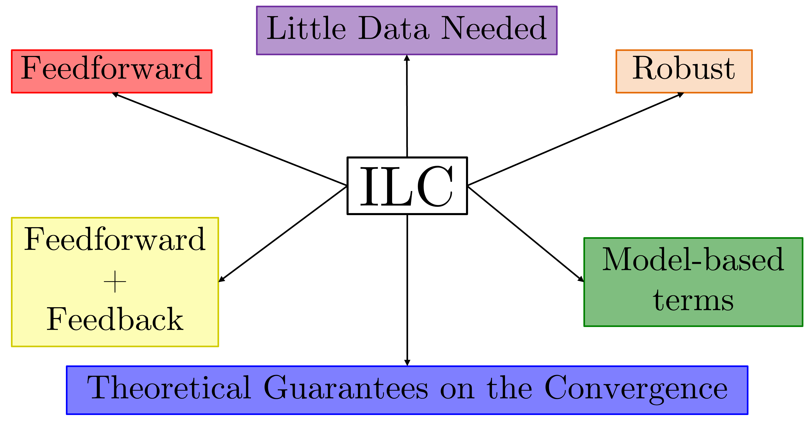
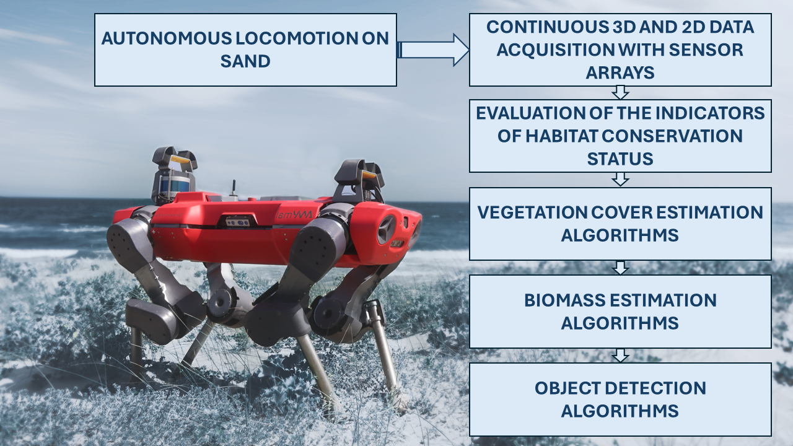

Modeling Soft Robots & Design
Modeling has no golden rule; control-oriented models are often a good fit.
Multimodal robot design.
Optimal Control
Generate dynamic and energy-efficient motions leveraging the elastic body.
Learning Control
Compensate for the reality gap, improve performance, and robustness.
Fishing for Data
Throwing sensor cameras for data collection in natural environments.
Selected Publications

Pierallini, M., Muttathil Gopanunni, R. K., Angelini, F., Bicchi, A., & Garabini, M.
“Fishing for Data: Optimal Planning and Iterative Learning Control for Throwing Sensors with a Flexible Robot.”
in IEEE Transactions on Control Systems Technology.
[Code Exp]
[Code ROS2]
[Paper]

Pierallini, M., Angelini, F., Mengacci, R., Palleschi, A., Bicchi, A., & Garabini, M. (2023)
Iterative learning control for compliant underactuated arms. in IEEE Transactions on Systems, Man, and Cybernetics: Systems
[Code]
[Paper]
Scaldaferri, A., Tolomei, S., Iotti, F., Gambino, P., Pierallini, M., Angelini, F., & Garabini, M. (2025)
Otto - Design and Control of an 8-DoF SEA-driven Quadrupedal Robot. in IEEE Open Journal of the Industrial Electronics Society.
[Code]
[Design]
[Paper]

Di Lorenzo, G., Pierallini, M., Angelini, F., … & Garabini, M.
Unveiling coastal habitats: A robotic perspective on the Mediterranean dune monitoring.
[Paper]
Di Lorenzo, G., Pierallini, M., Angelini, F., … & Garabini, M. (2025)
Robotic monitoring of European habitats: a labeled dataset for plant detection in Annex I habitats of Italy
[Paper]